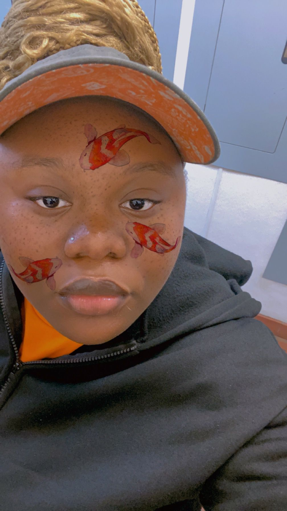

GREAT QUALITIES CHINNY POSSESSES

KINDNESS
Chinenye is a beacon of kindness in every aspect of her life. She
has an incredible ability to make people feel valued and heard,
offering a listening ear and a warm heart to those in need. Her
acts of kindness are not grand gestures but small, thoughtful
actions that brighten the days of those around her.
INTELLIGENCE
Chinenye possesses a unique blend of intelligence and humor that
makes her truly remarkable. Yet, it's her quick wit and sense of
humor that truly endears her to everyone she meets. Whether she's
engaging in a deep or casual conversation, Chinenye's ability to
inject humor into any situation brings a refreshing lightness and
ease. Her jokes are never at the expense of others but are instead
cleverly woven into her dialogues, making her interactions
enjoyable and memorable.
GRACE
One of the most captivating qualities Chinenye possesses is her
grace. Whether she’s navigating the challenges of everyday life or
facing more significant obstacles, she does so with a calm and
composed demeanor that exudes poise and elegance. Her graceful
nature is evident in the way she interacts with others, always
showing respect and consideration, even in the face of adversity.
Chinenye’s ability to maintain her composure and treat everyone
with dignity, regardless of the circumstances, is truly
remarkable.
These attributes... kindness, intelligence, humor, and
dedication—combine to make Chinenye an extraordinarily wonderful
person, admired and loved by all who have the privilege of knowing
her.
You are one of the most amazing friends I have had so far... Happy
birthday again dear.
